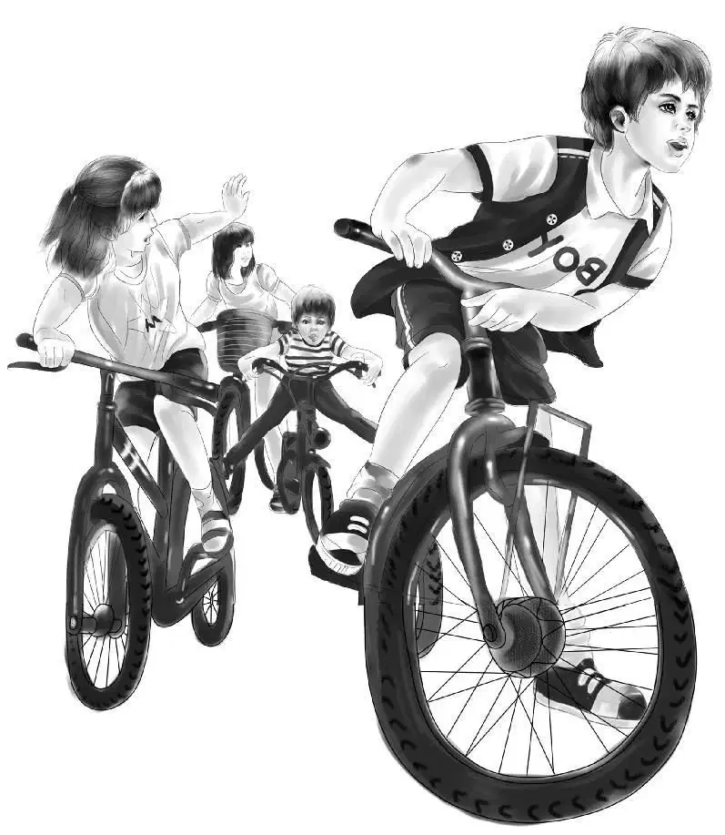
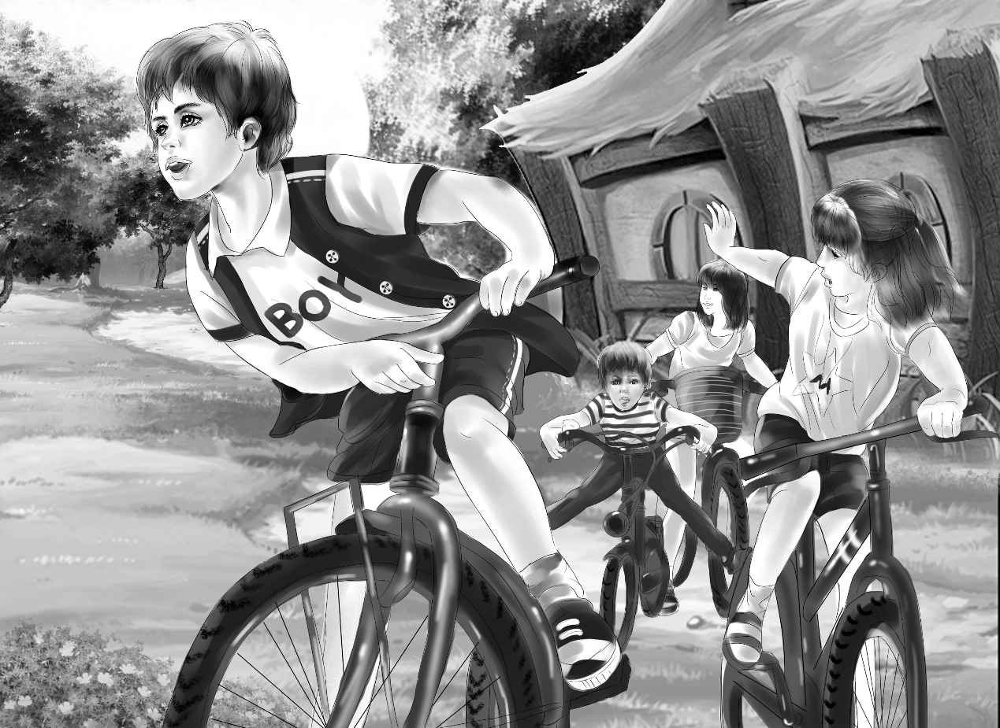
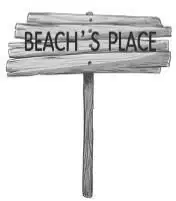
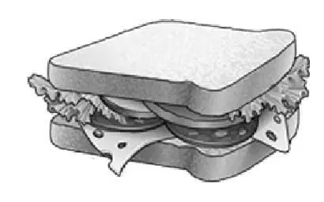
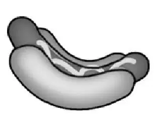
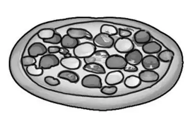

Jeffrey and Sammy Beach were running around their yard early the next morning when the Aldens were eating breakfast.
“Good luck to all of you,” Mr. Alden said as he started for his car. “I hope the boys can go with you on your bicycle trip.”
“Well, they act happy,” said Benny. “I bet they can go.”
When the boys saw the Aldens coming, they were too excited to take turns speaking. “Yes, we can go on our bikes! ” Jeffrey shouted. “Mom said so. We were so surprised! And we don’t even have to get back for lunch. We can buy lunch at Uncle Max’s restaurant.”
“We each have a dollar,” said Sammy.
“Good,” said Jessie. “We’ll go back for our bikes.”
The Aldens went home to get their bikes and to tell Mrs. McGregor that they would not be home for lunch.
“We’ll eat lunch at that little diner just off the Shore Road,” said Jessie.
Mrs. McGregor nodded. She said, “I’m glad the two boys are going to have a bit of exercise—and get out of that backyard for once.”
“Yes,” Jessie agreed. “Mr. and Mrs. Beach don’t think much about what young boys like to do. I have a feeling they just expect Jeffrey and Sam to be as little trouble as possible.”
“They don’t want to be bothered,” agreed Mrs. McGregor. “That’s easy to see.”
Soon six bicycles were wheeled out to the street. Benny stayed close to Sammy and began to talk to him. “Sammy,” he said, “tell me why you want that spyglass so much.”
“Every tree house ought to have a spyglass,” Sammy answered him. “You have to watch out for the enemy. And you want to see anything moving in the woods.”
“Yes, but most people build their house first and then get a telescope,” said Benny. “Now you boys wanted one before we even started the tree house. Why?”
“Well, you see we knew Uncle Max and Dad had one once,” Sammy told him, “and we might as well find it.”
Benny thought this over. He knew it was no reason at all. But now the others were pedaling down the street on their way to the Shore Road. Benny and Sammy followed.
It was very pleasant riding along the country road. There were no hills, and the road was smooth. It was not too hot, and there was a salt breeze blowing off the ocean. The six riders kept together very well. Sometimes one was ahead and sometimes another.
After they had been riding for about an hour, Benny was ahead. Suddenly he turned in a half-circle and came back to the rest. He said, “I will not go another pedal without something to eat.”
Violet laughed and said, “I’m glad you said that, Benny. I’m hungry, too.”
Jeffrey said, “Well, anyway I’m tired. Aren’t we near Uncle Max’s place yet?”

“Yes, we are,”replied Henry.“I have driven past it in the car, but never stopped to eat there. It’s right around this bend.”
Benny said, “Well, I can wait that long.” And they rode along to the bend in the road.
“Here it is, Jeffrey,” said Henry. “BEACH’S PLACE.” He pointed to an old sign. It was broken and hard to read.
The four boys and two girls parked their bikes by the steps.
“Sammy and I never saw this place before,” said Jeffrey. “Uncle Max must be an old guy. He’s much older than my dad. I hope he will know who we are.”
“Don’t worry,” said Benny. “Just tell him. He’ll believe you. And if he doesn’t, we’ll tell him.”
They went in. The room was rather dark and it was empty, but there was a fine smell of hamburger cooking.
Then a man came out of the back room of the restaurant. He was not an old guy at all. He was lively and strong, never still a minute. He had curly gray hair and bright blue eyes. He smiled at his customers and said, “Do you want sandwiches or hot dogs or hamburgers? ”
Nobody answered, but Sammy stepped up to the counter and looked up at the man.
“Are you Uncle Max?” he asked. “I’m Sammy.”
“Bless my soul!” said Max Beach. “Are you really? The last time I saw you, I held you in my arms. You were a tiny baby. Where is your brother?”
“Right here,” Jeffrey said. “Then we both have been in this very room?”
“Yes, you have, Jeffrey. But you were too small to remember it. And how is your father? And your mother? ”
“They’re very busy,” answered Sammy. “But Dad says he is coming to see you soon.”
“I hope so,” Mr. Beach replied. “I know he is an important scientist now. He won’t have much time for me, I’m afraid.”

“Well, don’t worry,” said Sammy. “He doesn’thave much time for us either. These are our new neighbors, the Aldens. They take lots of time with us.”
The Aldens smiled at Mr. Beach.
Benny said, “These boys are worth a lot of time. We are all building a tree house.”
“A tree house!” Uncle Max exclaimed. “Now that’s interesting! Are you building it in the big oak tree? ”
“That’s right! ”said Benny.“How did you guess? ”
“Well, I’ll tell you all about it, but you must have something to eat first.You look hungry to me.”
Violet laughed, “Yes, we are. I want a hamburger, a big one!”
“We’d all like hamburgers,” said Jessie. “And milk for everybody.”
“I’ll be back in a jiffy,”said Uncle Max. “Everything is ready. Excuse me for a minute.”
The visitors looked around.The room was quite dark. There was one big table and two smaller ones with chairs. Then there was the counter with stools. They all sat on the stools.
Soon Mr. Beach came in with a tray. He put six plates with hamburgers on the counter and poured six glasses of milk. He sat down on the other side of the counter.
Jeffrey said, chewing, “This isn’t just a hamburger, Uncle Max. This is a whole dinner. French fried potatoes, lettuce, tomatoes, and salad dressing and pickles!”
“Yes, I know,” Uncle Max nodded. “I like to see people eat. And now tell me about the tree house.”
“We began it two days ago, Mr. Beach,” said Henry. “The boys just finished the floor.”
“You call me Uncle Max, too, will you? Now I bet you children came down to see about that old spyglass.”
Everybody laughed because Uncle Max was laughing. “Such a silly thing!” he said. “I suppose your father forgot about it long ago.”
“Oh, no, he didn’t!” said Sammy. “He still says you have it.”
“Well, I haven’t,” said Uncle Max. “I have no idea where it is. And now I guess you want it for your tree house.”
“Well,we’d certainly like it,”said Sammy, drinking his milk.“A tree house always has a spyglass.”
“Well, that is true,” agreed Mr. Beach. “Let me tell you something you don’t seem to know. Your father and I had a tree house in that very tree.”
“You did? ” exclaimed Benny. “Nobody told us that.”
“No, my dad never told us,” said Jeffrey. “I don’t know why. I guess he was too busy. He’s always working.”
“We didn’t have it very long because we moved away,” Uncle Max went on. “But it was a pretty fine tree house. And that’s where we used the spyglass. We were very careful of it because it was a good one. It was in a heavy leather case. We always put it back in the case.”
“Did you and Mr. Beach do all the work on the tree house yourselves?” asked Benny.

“Well, almost. We had trouble with the roof. We weren’t tall enough, so a man helped us a couple of times. He was visiting the people who lived in your house then.”
“Maybe that man took the telescope,”said Jeffrey.
“Oh, no! He wouldn’t steal a penny, I’m sure of that. He wasn’t there very long, anyway. He came and went in a month, and we never saw him again.”
Henry looked at Uncle Max and asked, “Did you miss the spyglass just after he helped you? ”
Uncle Max did not want to answer this. But he said, “Well, I must say yes. We missed it the very day he went away. But he didn’t steal it. I’m absolutely sure! He had a telescope of his own, anyway.”
Violet said, “I don’t think Henry meant that the man stole it.But he may have put it somewhere.”

“Maybe,” said Uncle Max. “We never found it, anyway. The man made a hole in the roof so we could lie down in the tree house at night and look at the stars.”
“What a dandy idea! ”exclaimed Sammy. “We’re going to do that, too, aren’t we, Benny? ”
“Yes, sir,” said Benny. “We’ll have a hole in the roof even if we don’t have a spyglass!”
Jeffrey was thinking. He looked at his uncle and said, “The spyglass was one reason you didn’t get along with my dad?”
“Yes, part of the reason. I didn’t like school very much, but your dad always did well. There was a war then, and I wanted to be in the army. Your dad went to college. We didn’t see each other for many years. When the war was over, I traveled around for a while. Then I came back here and bought this diner. Your father and mother came to see me once. Sammy was a baby, and Jeffrey was too little to remember.”
“That must have been when we were living in New York,” Jeffrey said. “But New York is so noisy and busy that Mom doesn’t like it any more. She didn’t like to walk to the library, and she didn’t like to drive.”
“And Dad found the old house in Greenfield was empty—so we moved,” said Sammy.
“I’m glad you did,” said Uncle Max. Then he looked from Jeffrey to Sammy. “I used to think it was kind of a spooky old house. It sounds funny, but I always felt better in our tree house than anywhere else. You boys feel that way? ”
“No,” Jeffrey said. “Of course we haven’t any tree house yet. We haven’t had much chance to explore the house. Mostly we stay outside.”
“I used to hear a queer rocking sound,” Uncle Max said, more to himself than to the boys. “People used to tell stories about families who had lived in the house a long time ago. They were always sad stories. But things must be different today. And now, how about some apple pie for dessert? ”
“Yes,” said Henry. “We always take apple pie when we can. We want to see if it is as good as Jessie’s. She made one once with a glass bottle for a rolling pin.”
Uncle Max laughed and went out to get dessert. He soon came back. They were all eating the delicious pie when Sammy said, “All this fuss about a spyglass!”
“Well, it wasn’t just the spyglass,” said Uncle Max.“Your father was smart and he’s really a great man. I am not smart like that, and I’ve never made much money. This diner isn’t doing very well.You can see there aren’t any other customers.”
“Yes, we noticed that,”said Jessie.“I’m sorry.”
“Thank you,”said Uncle Max.“I wish my brother and I could be friends, but if he is too busy, that’s that.”

“We’ll tell him what a good lunch we had,” said Jeffrey. Both Beach boys took out their money.
“No sir!” cried Uncle Max. “You’re invited to lunch. I won’t take a cent from any of you. It was a pleasure to talk to you.”
Even Henry could not make Uncle Max change his mind, so they thanked him again and rode away.
“We’ll be back soon,” they all called.
“Now isn’t that the funniest thing! ”said Benny. “Nobody has the spyglass. It must really be lost.”
“We can use our old field glasses to look at the birds,”said Jessie.“But a telescope would be better.”
“We’ll make do,” said Benny. “And we still have a little time to work on the tree house this afternoon.”
Benny was right. Before Mr. and Mrs. Beach came home, they finished one whole side of the tree house, leaving a square hole for a window.
“We’re doing fine!” exclaimed Sammy. “The back is done, because that’s the tree, and the front will be open. That leaves only one side to do!”
Henry said, “When we get the roof on, you can live up there.”
Sammy added, “By that time we’ll have my carpet in.”
Just then they were all surprised. The back door of the house opened, and Mrs. Beach came out.
“Mom! You’re home!” cried the boys.
“Stay right there,” said Mrs. Beach. “Here is your supper. We’ll send it up in the basket. Wait till we say ‘Ready’.”
The Beach boys climbed into the tree house and let down the basket. The Aldens went to meet Mrs. Beach, and Henry took the heavy tray.
Mrs. Beach said, “Benny, you eat with them the first time. They will enjoy it more.”
Benny said, “So will I. It looks delicious, Mrs. Beach.”
First the boys pulled up fried chicken, raw carrots, and paper plates in the basket. Then they let it down, and Benny put in rolls, cookies, and a bowl of chocolate pudding. The third time they pulled up a carton of milk and three plastic cups. Then Benny went up to join the supper party.
Jessie said,“We’ll leave them alone,Mrs. Beach. They will have a better time with no girls.”
“You have been good to my boys,” said Mrs.Beach. “Sometime we will have a talk. My husband and I are very grateful to you.”
Jessie was just going to tell Mrs. Beach about their trip to see Uncle Max. But she stopped in time. The boys surely ought to tell their parents about Uncle Max and the lost telescope.